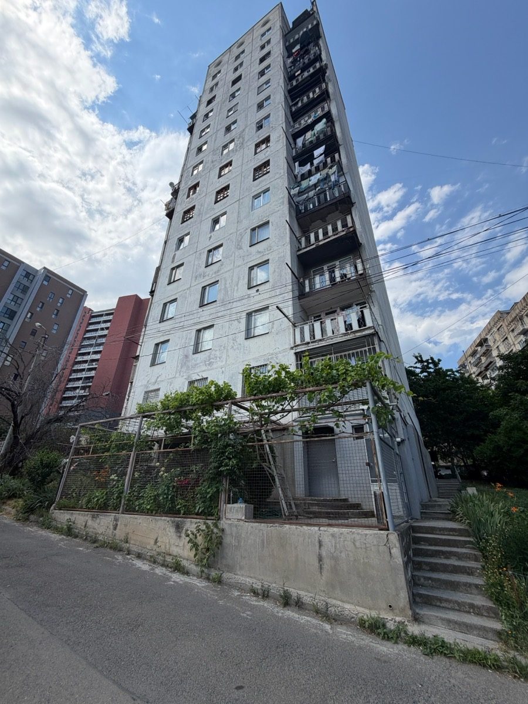
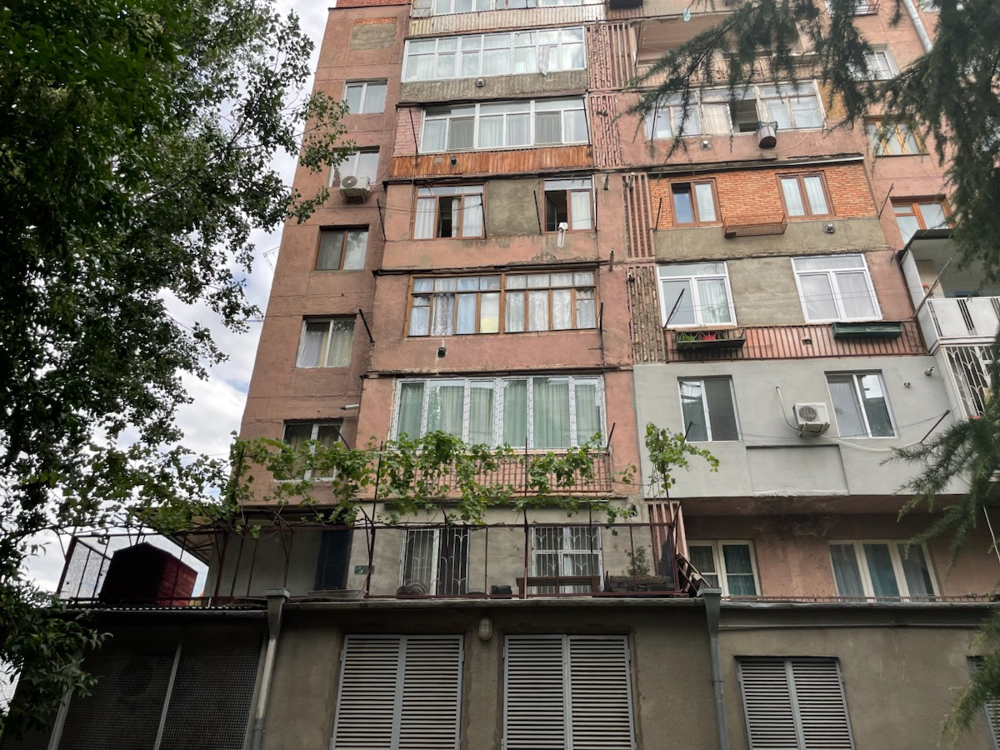
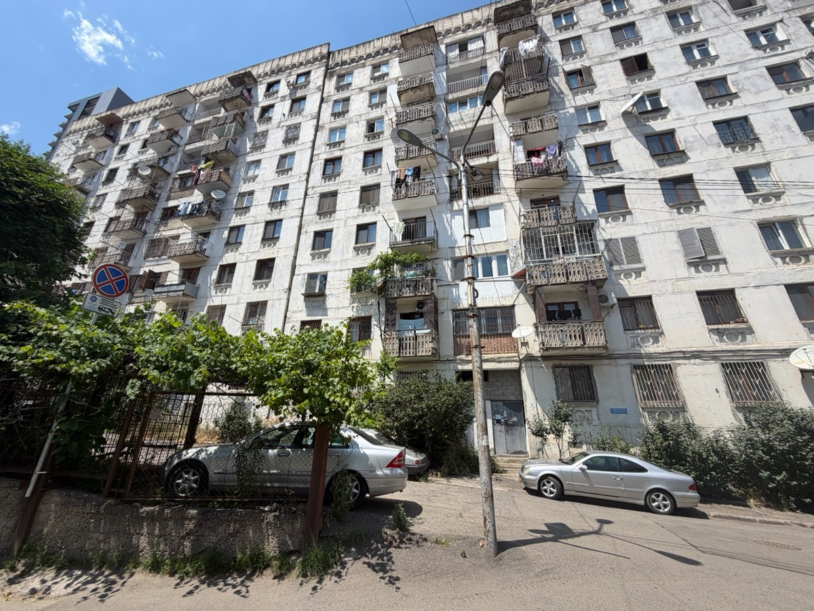
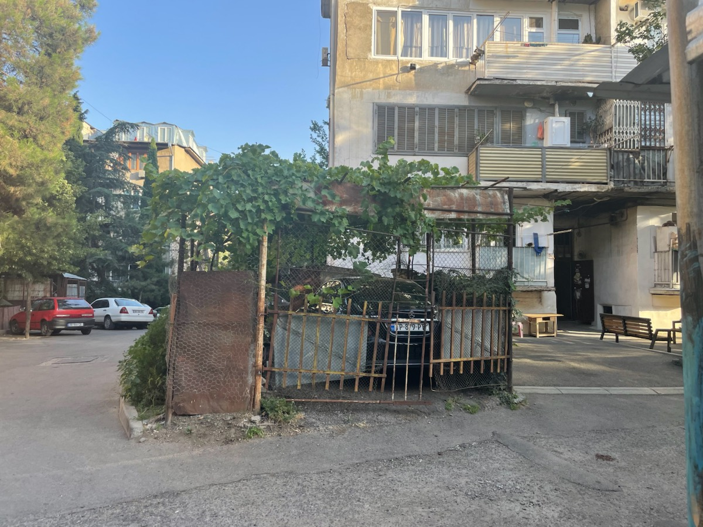
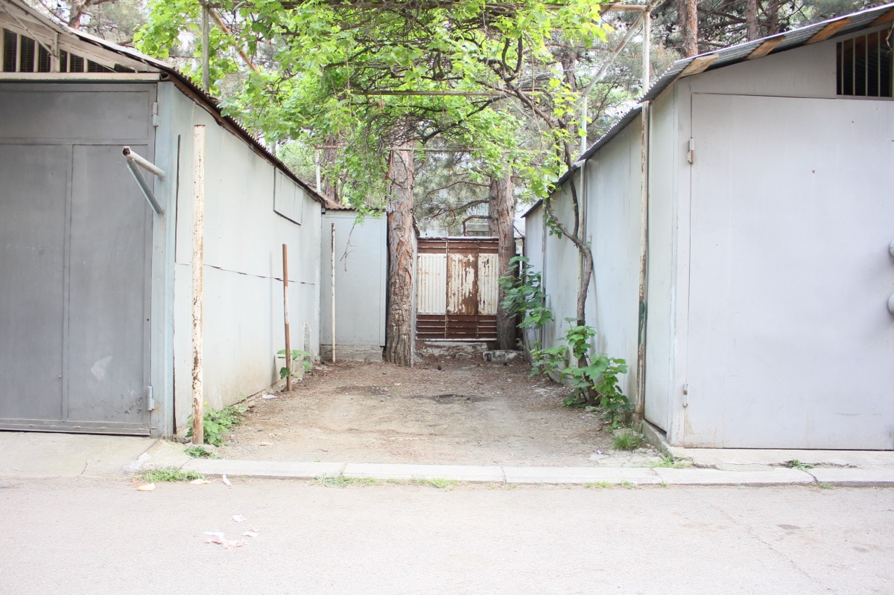
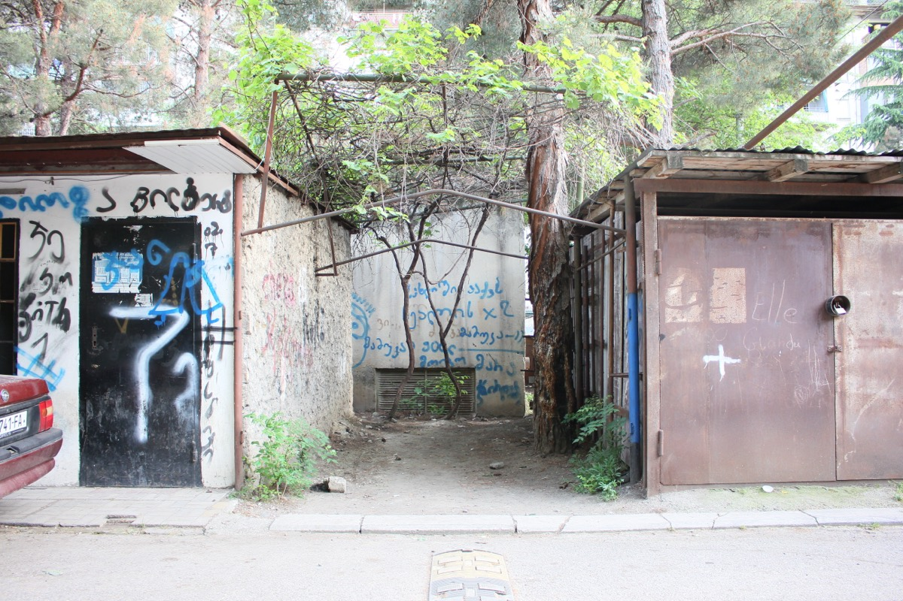
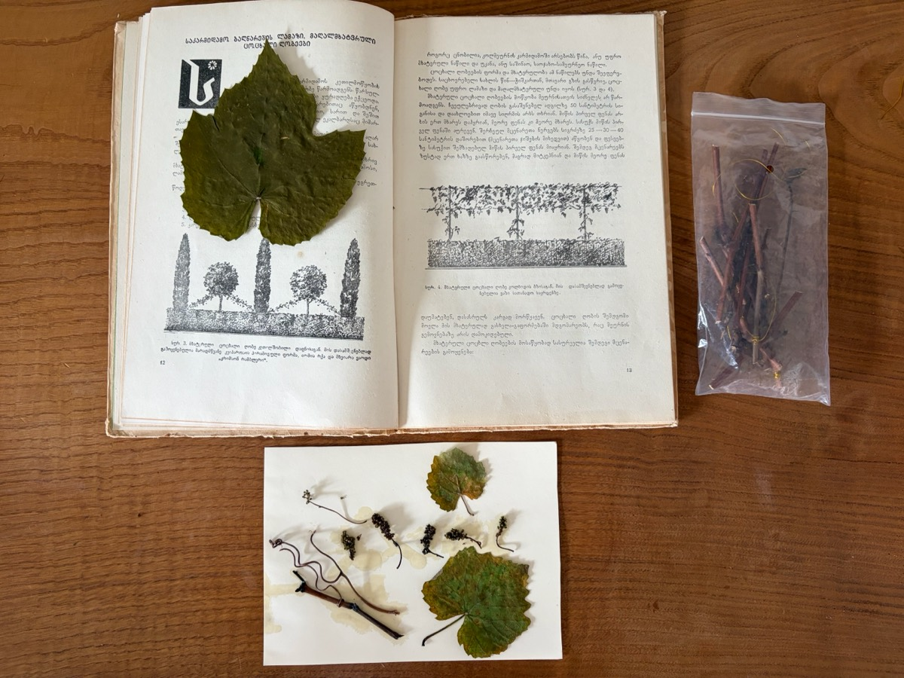

In March 2023, this video went viral in Georgia. A man had stumbled upon a grapevine pergola, freshly cut down, in front of a Soviet building block in Vake, one of Tbilisi's central neighborhoods.
Grapevines as Trees of Life
Grapevines as trees of life in Georgian metalwork, 2023. Lia Khetaguri archive. Courtesy of the author.
In Georgia, a grapevine is never just a plant. It is a way the nation holds itself together, and when it is cut, something more than wood is severed.
Grapevines have long shaped Georgia’s rural landscapes, cultivated through generations of peasant labor for both viticulture and decorative gardening.
Grapevines Becoming Urban
Grapevines followed rural migrants into the city amid Soviet industrialization, finding new ground among the city’s concrete.
Creeping Agency of Grapevines
Tamta Khalvashi’s archives. Tbilisi, Saburtalo, 2022-2025
Amid the slow ruination of Soviet mass housing and growing air pollution, grapevines became living infrastructures of care, escaping human intentions and creeping across crumbling facades.
Grapevines as Commons
Tamta Khalvashi’s archives. Tbilisi, Saburtalo, 2022-2025
Grapevines weave leafy pergolas into shared spaces of shade, rest, and neighborly gatherings. From communal harvests to wine pressed in garages or basements, caring for the vines becomes a way of caring for one another and for the places they inhabit.






Tamta Khalvashi’s archives. Tbilisi, Saburtalo, 2022-2026.
Tamta Khalvashi’s archives. Tbilisi, Saburtalo, 2022-2026.
Tamta Khalvashi’s archives. Tbilisi, Saburtalo, 2022-2026.
Tamta Khalvashi’s archives. Tbilisi, Saburtalo, 2022-2026.
Irakli Kochlashvili archive. Tbilisi, Sanzona and Gldani, 2023. Courtesy of the author.
Irakli Kochlashvili archive. Tbilisi, Sanzona and Gldani, 2023. Courtesy of the author.
The vines that gather neighbors beneath their shade also mark the edges of private worlds. Around garages and parked cars, their roots quietly redraw the boundaries of the shared Soviet courtyard, as cultivating greenery becomes cultivating possession.
Labyrinths of Unintended Resistance
Yet the same garages that enclose the commons can also protect them. Draped in sprawling grapevines, they form tangled labyrinths of concrete and greenery, inadvertently resisting the advance of large-scale urban development into the courtyards of Soviet housing.
Against this fragile life of the commons, the anger over a severed grapevine was about more than a plant. Cut down because its dust dirtied a resident’s car, neighbors rescued the vine by placing its roots in water, keeping the possibility of life and a shared world alive.
Photographs by George (Goga) Sekhniashvili, one of the neighbors who helped save the severed grapevines through collective care and advice from the community. His daughter, Elene Lika Sekhniashvili, generously shared the photographs with me in 2023.
Grapevines for Troubling Times
Tamta Khalvashi’s archives. Tbilisi, Vake, 2026.
The grapevines cannot mend the broken city. Yet amid its ruins, they sustain fragile ways of living together, keeping life possible in the uncertain interval before more just and livable urban worlds might emerge.
